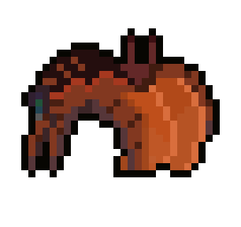

My Games

WellBound
WellBound is a game with a randomly generated level every time you play it. The player wakes up in a strange grassy world surrounded by wilderness on all sides. The wilderness is full of strange creatures that try to stop you the closer you get to escaping. The player must learn to survive to escape or solve the final puzzle.
Gameplay & Features
- World Generation: The world is randomly generated at the start of each run with three biomes: the desert, the swamp, and the forest, generated with Perlin noise.
- Difficulty System: The difficulty is constantly increasing in the background, making enemies gain more base speed, damage, sprint speed, sprint duration, and detection range.
- Crafting System: All recipes are made by combining one item with another to create stamina food, effect items, or traps.
- Ritual System: The player must complete several different rituals, such as the sacrifice ritual, resource ritual, and sacred item ritual, to escape.
- Enemies: The world contains enemies like frogs in the swamp, bunnies and snails in the forest, and crabs in the desert.

